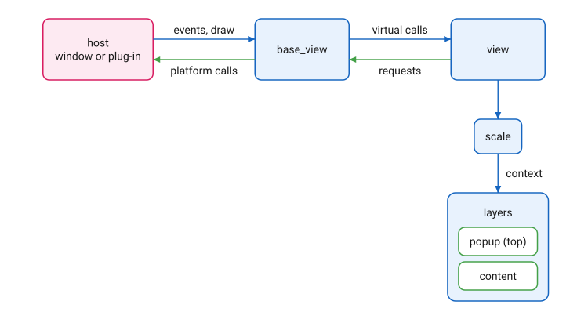
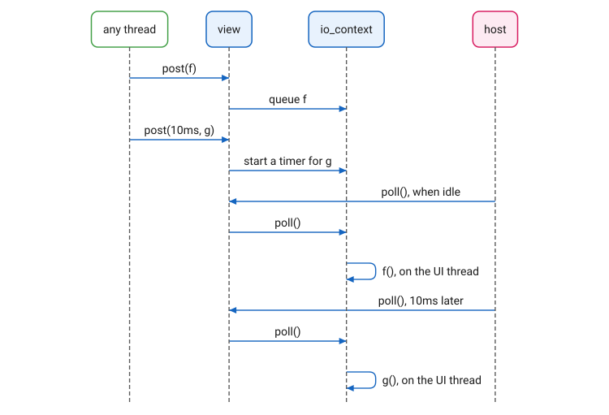
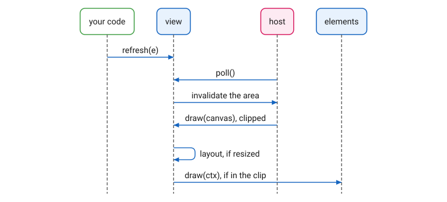

View
Overview
The view is the root of an Elements user interface. It holds the content and sits between it and the host. The host sends the view user input and draw calls; the view passes each down the element tree with a context. The view also redraws what has changed and runs the work the application posts to it.
The view needs neither an app nor a window. In an application, a
window holds it; in a plug-in, such as an audio plug-in (VST, AU
and the like) or an image editor’s filter, the plug-in host provides a
native view for it. Either way, the host talks to the view through
the small set of member functions declared in base_view. Elements runs on these hosts:
-
macOS (Cocoa)
-
Windows (Win32)
-
Linux: GTK 3, X11 and Wayland
The host API is kept as simple as possible, to make Elements easy to
port: a new host implements base_view and the few free functions
beside it, and, for applications, window and app.

Base View
base_view is the interface between the view and its host. The host
calls its virtual functions:
-
draw, with a canvas, when the view needs painting. -
click,drag,cursor,scroll,keyandtext, for mouse and keyboard input. -
begin_focusandend_focus, when the view gains and loses the keyboard focus. -
track_dropanddrop, for drag and drop. -
poll, when the host is idle (see Posting and Polling). -
on_open,on_size_change,on_scale_changeandon_close, for changes to the view itself.
base_view implements them all as no-ops; view overrides them.
The host’s input comes in a few small structs:
-
mouse_button: the button (left,middleorright), whether it isdown, the click count, the modifiers and the position. -
cursor_tracking:entering,hoveringorleaving. -
key_info: thekey_code, thekey_action(press,releaseorrepeat) and the modifiers. -
text_info: a Unicode code point and the modifiers. -
drop_info: the dragged payload and its position.
The modifiers are bit flags: mod_shift, mod_control, mod_alt
(alias mod_option) and mod_super (alias mod_command: the Windows
key or the Command key). mod_action is the platform’s command key:
Command on macOS, Control elsewhere.
base_view.hpp also declares functions that act on the system, not on
a view:
-
set_clipboard,get_clipboard,clipboard_typesandclipboard_contains: the clipboard, which holds a payload (see Clipboard). -
set_cursor: set the cursor’s shape. -
scroll_direction: the sign, +1 or -1 on each axis, of the user’s scroll setting (natural scrolling or not). -
init_resources: set the image search path and register the fonts, once per process. The first view calls it if nothing has. A plug-in can call it at load time, so the cost is not paid when its window opens.
Posting and Polling
The view runs an asio::io_context, io(), which the host polls when
idle, on the UI thread. post(f) runs f at the next poll.
post(duration, f) runs f at the first poll after duration has
passed, and returns the timer, which can cancel it. Both may be called
from any thread; f always runs on the UI thread. Status bars animate
this way, and work on another thread returns its result to the view
this way.

Content
A view’s content is a stack of layers (see Layers), drawn bottom to
top. content(a, b, …) sets them, the first on top:
view_.content(
overlay, // on top
main_content,
background // at the bottom
);Each argument is an element or a shared_ptr to one. layers()
returns them, bottom first.
add, remove, move_to_front and move_to_back change the layers
while the view runs, as when a popup or a dialog opens and closes. Each
takes effect at the next poll (see Posting and
Polling), so a callback that opens or closes a layer, such as a
button’s on_click, returns before its tree changes.
add puts its element on top and gives it the focus if it wants it.
is_open tells whether an element is one of the layers.
Limits and Scale
limits() returns the content’s limits. When they change, the view
calls on_change_limits; a view in a window constrains the window to
them.
scale(s) scales the content. At 2, everything is twice as big, and
the content is laid out in half the view’s size, in its own units. A
plug-in uses it to follow the host’s zoom.
Drawing
Elements does not draw when something changes. A change calls
refresh, which marks an area for redrawing; the drawing comes later:
-
Your code calls
refresh, from any thread. -
At the next
poll(see Posting and Polling), the view passes the marked areas to the host. -
The host repaints them: it makes a canvas, clips it to the areas, and calls the view’s
draw. -
The view lays out its content again if the view’s size has changed, then draws the content with a context of the view’s bounds.
-
Each container draws only the children that fall inside the clip, each with a context of its own bounds, down to the elements that draw themselves (see Element).

The refresh functions mark what to redraw:
-
refresh(): the whole view. -
refresh(area): an area, in view coordinates. -
refresh(e): the elemente, wherever it is. -
refresh(e, n): the elementnlevels out frome. -
refresh(ctx)andrefresh(ctx, n): the same, from an element’s context, with no search.
Refreshing an element by reference searches the tree for it, so the view batches these: up to four are refreshed one by one; with more, the whole view is refreshed once.
|
That covers the refresh only. Changing an element’s state from another
thread is still a data race, and so is assigning to a model linked to
one (see Model). Post the change instead, with
|
Layout
The view lays out its content when it is first drawn and whenever its
size changes. After a change that moves or resizes an element,
layout() lays out the content again and refreshes the view;
layout(e) does the same but refreshes only e.
Events
The view passes each event to its content with a context of the
content’s bounds; each element passes it on to its children (see
Element). A click that no element takes,
on the background for instance, removes the keyboard focus from
whatever had it, such as a text box being edited. A key press that
the focus does not take goes to the content again, as a hotkey, which
any element may take: a menu, for its items' shortcuts. Where no element sets
the cursor, the view sets it to the arrow. current_button() returns the last mouse
button event.
| A host that sends UTF-16, as Windows does, sends a character outside the Basic Multilingual Plane as two halves of a surrogate pair; the view joins them into one code point. |
in_context_do(e, f) calls f with the context of e in the tree,
for code that has the element but not its context.
Tracking
A control reports to the view as the user works it: begin_tracking
at the press, while_tracking as it moves, end_tracking at the
release. The view passes each to on_tracking; an audio plug-in uses
it to record automation. The view supplies a missing begin_tracking before
a while_tracking, and ends a gesture after a second with no change,
as if released.
Undo and Redo
add_undo(t) records an undo_redo_task, a pair of functions that
undo and redo a change. undo() calls the latest task’s undo;
redo() calls the latest undone task’s redo. Recording a task clears
the redo history.
A task’s functions return false when the change no longer applies,
because the element or the part it changed is gone. The view then drops
the task and tries the next, so one undo always undoes something while
anything is left to undo. undo() and redo() return whether one did.
An element’s tasks reach it through an undo_anchor, a member of the
element (in elements/support/undo_anchor.hpp). The anchor keeps the
tasks right as the element changes: they follow it when it is moved, no
task recorded before applies to a copy, and assigning to the element or
destroying it leaves its tasks stale, to be dropped when reached.
Bindings
bindings() returns the view’s model_binder: the links between its
controls and the application’s models, which last as long as the view.
See The View’s Bindings.
Declaration
namespace cycfi::elements
{
class base_view : non_copyable
{
public:
base_view(host_view_handle h);
base_view(extent size_);
base_view(host_window_handle h);
virtual ~base_view();
virtual void draw(canvas& cnv);
virtual void click(mouse_button btn);
virtual void drag(mouse_button btn);
virtual void cursor(point p, cursor_tracking status);
virtual void scroll(point dir, point p);
virtual bool key(key_info const& k);
virtual bool text(text_info const& info);
virtual void begin_focus();
virtual void end_focus();
virtual void track_drop(drop_info const& info, cursor_tracking status);
virtual bool drop(drop_info const& info);
virtual void poll();
virtual void refresh();
virtual void refresh(rect area);
virtual void on_open(extent size_, float scale);
virtual void on_size_change(extent size_);
virtual void on_scale_change(float scale);
virtual void on_close();
point cursor_pos() const;
extent size() const;
void size(extent size_);
host_view_handle host() const { return _view; }
};
class view : public base_view
{
public:
view(extent size_);
view(host_view_handle h);
view(window& win);
~view();
void relinquish_focus();
void layout();
void layout(element& element);
float scale() const;
void scale(float val);
void refresh() override;
void refresh(rect area) override;
void refresh(context const& ctx, rect area);
void refresh(element& element, int outward = 0);
void refresh(context const& ctx, int outward = 0);
struct undo_redo_task
{
std::function<bool()> undo;
std::function<bool()> redo;
};
void add_undo(undo_redo_task t);
bool has_undo();
bool has_redo();
bool undo();
bool redo();
using content_type = layer_composite;
using layers_type = layer_composite::container_type;
using scaled_content = scale_element<indirect<reference<layer_composite>>>;
scaled_content& main_element() { return _main_element; }
scaled_content const& main_element() const { return _main_element; }
content_type& content();
content_type const& content() const;
void content(std::initializer_list<element_ptr> list);
template <typename... E>
void content(E&&... elements);
using layers_vector = std::vector<element_ptr>;
void add(element_ptr e, bool focus = true);
void remove(element_ptr e);
void move_to_front(element_ptr e);
void move_to_back(element_ptr e);
bool is_open(element_ptr e);
layers_vector const& layers() const;
view_limits limits() const;
mouse_button current_button() const;
using change_limits_function = std::function<void(view_limits limits_)>;
change_limits_function on_change_limits;
using io_context = asio::io_context;
io_context& io();
using steady_timer_ptr = std::shared_ptr<asio::steady_timer>;
template <typename T, typename F>
steady_timer_ptr post(T duration, F f);
template <typename F>
void post(F f);
using tracking = element::tracking;
using track_function = std::function<void(element& e, tracking state)>;
track_function on_tracking = [](element& /* e */, tracking /* state */) {};
void manage_on_tracking(element& e, tracking state);
using context_function = element::context_function;
void in_context_do(element& e, context_function f);
model_binder& bindings() { return _bindings; }
};
std::vector<std::string> clipboard_types();
bool clipboard_contains(std::string_view mime_type);
payload get_clipboard(mime_types const& types);
void set_clipboard(payload const& data);
void init_resources();
void set_cursor(cursor_type type);
point scroll_direction();
}The view overrides of base_view’s event functions and `on_ hooks
are left out above. base_view(host_view_handle) is not on Windows,
where a view’s handle is its window’s; on X11, both classes also take
the parent window, for a view inside a window another program owns.
Expressions
Notation
v-
A
view. e,a,b-
Elements, or `shared_ptr`s to elements.
p-
An
element_ptr. r-
A
rectin view coordinates. n-
An
int: how many levels out from an element to refresh. ctx-
A context.
s-
A
floatscale. f-
A function taking no arguments.
d-
A
std::chronoduration. t-
An
undo_redo_task.
Content
| Expression | Semantics |
|---|---|
|
Set the layers, |
|
The layers, as a |
|
The layers, bottom first. |
|
Add |
|
Remove |
|
Move |
|
Move |
|
Whether |
Limits, Scale and Layout
| Expression | Semantics |
|---|---|
|
The content’s limits. |
|
Called with the new limits when they change. |
|
The content’s scale. |
|
Set the content’s scale to |
|
Lay the content out again and refresh the view. |
|
Lay the content out again and refresh |
Refresh
| Expression | Semantics |
|---|---|
|
Repaint the whole view. |
|
Repaint |
|
Repaint |
|
Repaint the element of |
|
Repaint |
Posting, Tracking and Undo
| Expression | Semantics |
|---|---|
|
Run |
|
Run |
|
Called with each control and its tracking state. |
|
Call |
|
Record |
|
Undo the latest that still applies, dropping those that do not; return whether one was undone. |
|
Redo the latest undone that still applies; return whether one was redone. |
|
Whether there is one to undo. |
|
Whether there is one to redo. |
Example
examples/hello_universe: a window, its view, and a scroller over an
image as the content.
int main(int argc, char* argv[])
{
app _app("Hello Universe");
// Set up the fonts and search paths once, at startup, so the
// first window does not pay for it.
init_resources();
window _win(_app.name());
_win.on_close = [&_app]() { _app.stop(); };
view view_(_win);
view_.content(
scroller(image{"space.jpg"})
);
_app.run();
return 0;
}Copyright (c) 2014-2026 Joel de Guzman. All rights reserved. Distributed under the MIT License